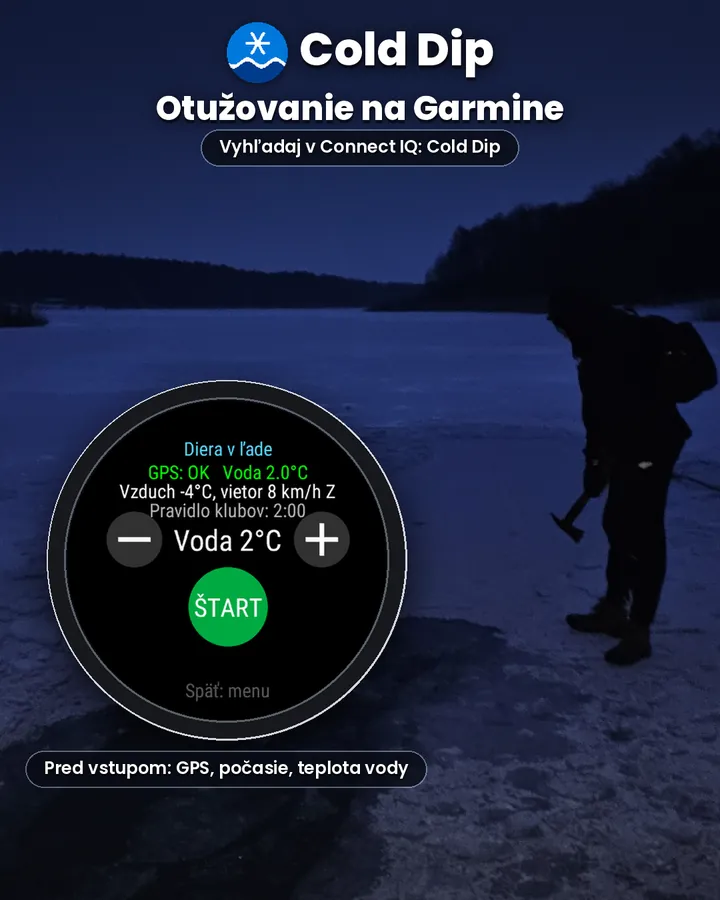
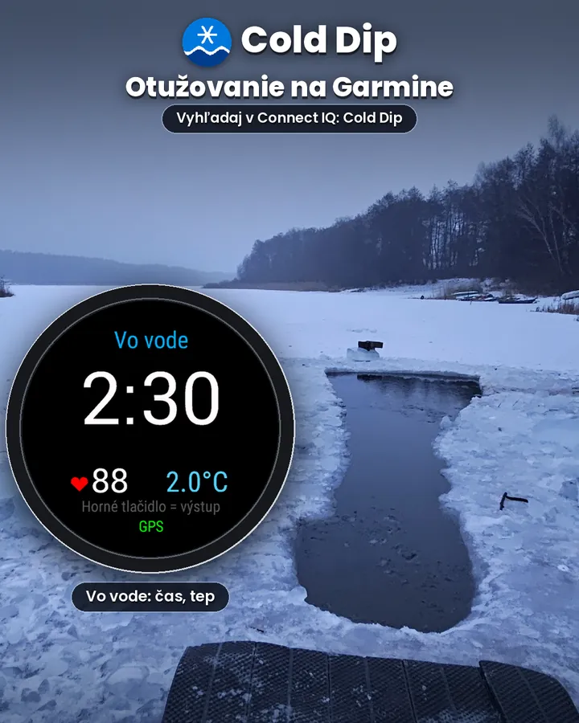
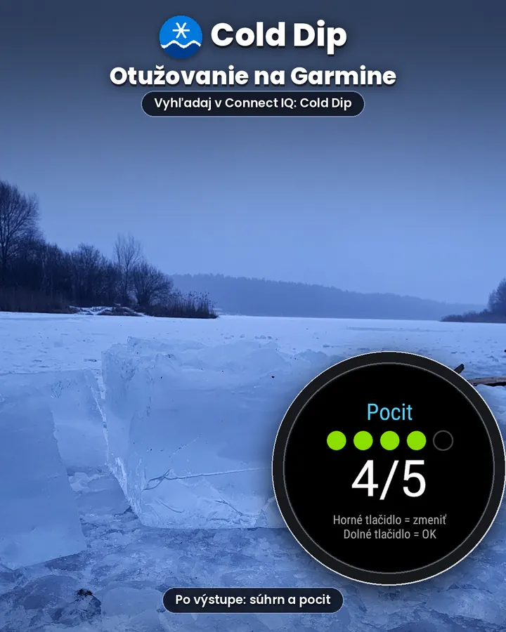
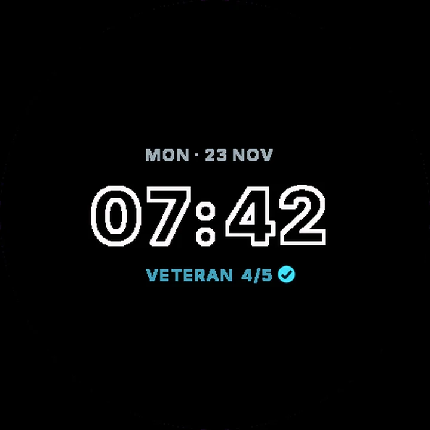
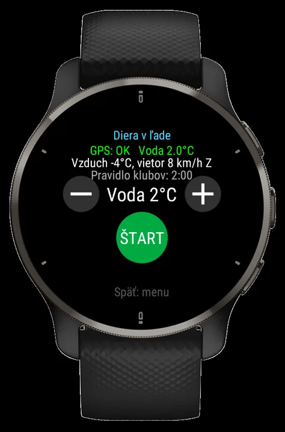
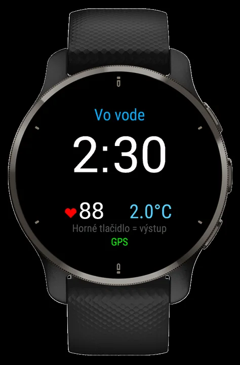
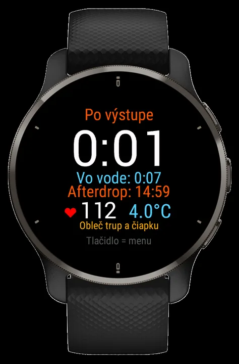

Mors – tarcza
Animovaný ciferník s mrožom pre otužilcov
3,99 USD 24 hodín zadarmo
Čoskoro v obchode Connect IQ Stiahnuť v Connect IQ Viac
Na hodinkách sa aplikácia volá Otužovanie.
Otužovanie a zimné plávanie zaznamenané poriadne — nie ako plávanie.
Alebo v aplikácii Connect IQ v telefóne vyhľadajte „Cold Dip“.



Systémy
Aplikáciu si teraz môžete stiahnuť na hodinky Garmin. Verzia pre Amazfit (Zepp OS) je v recenzii v Zepp App Store. Verzie pre Huawei, Wear OS a Apple Watch sú v príprave.
Ciferníky
Dva ciferníky s moržom pre otužovanie. Mors – tarcza sa mení podľa počasia. Mors Level rastie s minútami v sezóne.
Animovaný ciferník s mrožom pre otužilcov
3,99 USD 24 hodín zadarmo
Čoskoro v obchode Connect IQ Stiahnuť v Connect IQ Viac
Herný ciferník s mrožom na otužovanie
2,99 USD 7 dní skúšobnej verzie zadarmo
Čoskoro v obchode Connect IQ Stiahnuť v Connect IQ Viac
Animovaný ciferník s mrožom pre otužilcov
Mrož reaguje na počasie: v peknom počasí sa hojdá na vlnách, v mraze si nasadí čiapku, strasie sneh a skočí do prerážky, keď je čas na otužovanie. Čas, dátum, teplota vzduchu, počasie, tep, kroky a batéria. Animácia sa spustí po prebudení hodiniek — nikdy v režime vždy zapnuté.
3,99 USD jednorazovo, plus DPH, ak sa uplatňuje
Na hodinkách AMOLED sa morž pohne, keď zdvihneš zápästie — nikdy v režime vždy zapnuté.
Plne farebná animácia na hodinkách AMOLED, napr. Venu 2, 2 Plus, 3 a 4, vívoactive 5 a 6, Forerunner 165, 170, 265, 570, 965 a 970, Fenix 8 a 9 (AMOLED), Epix 2, Descent Mk3, D2 Mach, Approach S70 a S72, Instinct 3 AMOLED a MARQ 2 a 3.
Tento ciferník nie je k dispozícii na hodinkách MIP a modeloch s menšou pamäťou, napr. Fenix 5 Plus, Fenix 6 a 7, Fenix Solar, Forerunner 245, 255, 745, 945 a 955, Enduro, Descent Mk2, vívoactive 4, Venu 1 a prvá generácia MARQ. Tieto displeje nedokážu zobraziť plne farebnú animáciu.
Herný ciferník s mrožom na otužovanie
Váš mrož postupuje cez 5 úrovní spolu s minútami v studenej vode v sezóne — naživo z bezplatnej aplikácie Cold Dip. V zime para nad dierou v ľade, v lete pláž, odznak série dní, teplota vody, tep, batéria a úsporný režim vždy zapnuté. Animácia prebudenia sa spustí po prebudení hodiniek — nikdy v režime vždy zapnuté.
2,99 USD jednorazovo, plus DPH, ak sa uplatňuje · 7 dní skúšobnej verzie zadarmo
Aby mrož postupoval naživo — minúty, séria a teplota vody — nainštalujte si bezplatnú aplikáciu Cold Dip. Bez nej tieto polia jednoducho ukazujú údaje hodiniek.
NOVÁČIK 1/5


5 úrovní
1/5
0–29 min v sezóne
2/5
30–119 min v sezóne
3/5
120–299 min v sezóne
4/5
300–599 min v sezóne
5/5
600+ min v sezóne





Plnofarebná animácia na 51 hodinkách AMOLED, napríklad Venu 2, 2 Plus, 3 a 4, vívoactive 5 a 6, Forerunner 165, 170, 265, 570, 965 a 970, Fenix 8 a 9 (AMOLED), Epix 2, Descent Mk3, D2 Mach, Approach S70 a S72, Instinct 3 AMOLED a MARQ 2 a 3. Režim vždy zapnuté používa veľmi málo svietiacich pixelov.
Čitateľný, statický ciferník na 19 hodinkách MIP, napríklad Fenix 7, Fenix 8 Solar, Forerunner 255 a 955 a Enduro 3 a 4. Celkovo Mors Level podporuje 70 hodiniek Garmin, v 11 jazykoch.
Urobená pre otužovanie, nie pre bazén. Rozhodujete vy, po celý čas.
Horné tlačidlo prepína fázy. Čas vo vode proste beží — aplikácia vám nikdy nepovie, aby ste vyliezli. To je vaše rozhodnutie. Posledný čas je len orientačná hodnota, nie cieľ, ktorý musíte prekonať.
Tep sa zaznamenáva po celý čas. Teplotu vody zadáte ručne a uloží sa k aktivite.
Teplota vzduchu, pocitová teplota a vietor — z počasia Garmin v telefóne.
Miesto vstupu sa uloží a v Garmin Connect sa zobrazí na mape.
Po každom vstupe krátke hodnotenie, ako sa cítite. Navyše špička a zotavenie tepu a Body Battery a stres pred vstupom.
Všetko sa v Garmin Connect uloží ako vlastná aktivita, nie ako plávanie.
Angličtina, poľština, nemčina, čeština, slovenčina, fínčina, nórčina, švédčina, španielčina, ruština a ukrajinčina. Aplikácia sa automaticky prepne do jazyka hodiniek.
Forerunner, Fenix, Epix, Enduro, Venu, Vivoactive, Instinct 2 / 3 / E / Crossover a ďalšie. Nie je podporovaná na veľmi starých hodinkách, napríklad Forerunner 920XT (Connect IQ 1.x).
Voliteľné doplnky k bezplatnej aplikácii — platíš len vtedy, keď ich chceš
Aplikácia, ktorú už používaš, ostáva zadarmo. Pro je pre tých, ktorí chcú zo sezóny viac: nové spôsoby tréningu, jasnejší prehľad o pokroku a jednoduchšiu obrazovku vo vode.
4,99 USD jednorazovo, plus DPH, ak sa uplatňuje · 7 dní skúšobnej verzie zadarmo
Vyskúšaj Pro 7 dní zadarmo — potom 4,99 USD Aktualizovať v Connect IQ
Sauna s hodinkami na zápästí, studená sprcha, vedený kontrast sauny a vody alebo krátka príprava dychom pred vstupom. Zmenu fázy vždy potvrdíš tlačidlom.
Pomenované etapy a upozornenia v časoch, ktoré si zvolíš, navyše k bezplatným alarmom po minúte, v polovici a 3-2-1, ktoré ostávajú bez zmeny.
Celkový čas vo vode a v saune, ďalšie rekordy a história až 200 sedení. Bezplatný zoznam stále ukazuje posledných 30.
Udrž si sériu 7, 14 alebo 30 dní a získaj odznaky za 10, 25, 50 a 100 sedení, prvý vstup pod 5°C, kontrastné sedenie a saunu plus vodu v jednom sedení.
Veľký timer, stránka tepu a kôl a motívy (ľad, tmavý, vysoký kontrast, sauna). Stránku meníš tlačidlami hore a dole.
Jeden veľký timer vo vode, teplota vody a tep. Jedno tlačidlo na štart a stop. Bez ďalších menu a obrazoviek. Zapneš ho v nastaveniach po odomknutí Pro.
Navrhnutý čas podľa teploty vody, podľa bežného klubového pravidla (približne toľko minút, koľko je °C, od 0:30 do 5:00). Je to len tip: aplikácia nikdy neukončí sedenie a nikdy netvrdí, že je čas bezpečný.
Na novších hodinkách môžete pripnúť náhľad a komplikácie: dennú sériu, čas posledného vstupu a minúty sezóny. Náhľad je tam zadarmo. Komplikácie vyžadujú ciferník, ktorý vie komplikácie aplikácií.
Po uložení vstupu jednoduchá karta ukáže čas, teplotu, pocit a sériu. Odfotťte obrazovku a môžete ju zdieľať. Zoznam histórie ostáva na hodinkách a Garmin Connect ďalej dostane aktivitu FIT. Žiadny cloudový export ani obrázok na Instagram — Connect IQ sám fotky neodošle.
Po vstupe uvidíte jednoduchý graf tepu, vrchol a hodnoty regenerácie po 1 a 2 minútach. Je to len tip, nie lekárska rada.
Uložte miesto vstupu s poslednou teplotou vody, ktorú ste tam zaznamenali. Keď budete nablízku, úvodná obrazovka môže túto návštevu ukázať. Nie je to živá teplota jazera — Connect IQ také API nemá.
Ak hodinky nechávate vonku, aby sa neprehriali, zapnite možnosť: aplikácia v saune nebude čakať tep zo zápästia a potom môže spustiť fázu zahrievania. Zahrievanie môžete spustiť aj po vode z ponuky.
| Čo je v sade | Zadarmo | Pro ⭐ PRO |
|---|---|---|
| Všetko, čo už je v Cold Dip 1.0.3 — štyri profily, história 30 sedení, rekordy, riadené dýchanie, GPS a ďalšie | ✓ Áno | ✓ Áno |
| Sauna, kontrast a nové režimy ⭐ PRO | — | ✓ Áno |
| Vlastné alarmy vo vode ⭐ PRO | — | ✓ Áno |
| Celá sezóna na jednom mieste ⭐ PRO | — | ✓ Áno |
| Odznaky a denná séria ⭐ PRO | — | ✓ Áno |
| Ďalšie obrazovky a farebné motívy ⭐ PRO | — | ✓ Áno |
| Jednoduchý režim, pohodlný v rukaviciach ⭐ PRO | — | ✓ Áno |
| Tip na čas — nie limit ⭐ PRO | — | ✓ Áno |
| Náhľad a komplikácie ciferníka (novšie hodinky) | Na novších hodinkách | Na novších hodinkách |
| Karta vstupu a zoznam histórie ⭐ PRO | — | ✓ Áno |
| Graf tepu a regenerácie ⭐ PRO | — | ✓ Áno |
| Uložené miesta s poslednou teplotou vody ⭐ PRO | — | ✓ Áno |
| Hodinky mimo saunu a zahrievanie ⭐ PRO | — | ✓ Áno |
| Cena | Zadarmo | 7 dní skúšky, potom jednorazovo 4,99 USD |
Pro beží na novších hodinkách Garmin s Connect IQ 4 alebo novším, vrátane Venu 2 / 3 / 4, Venu Sq 2, Venu X1, vívoactive 5 / 6, Forerunner 165 / 170 / 255 / 265 / 570 / 955 / 965 / 970, fēnix 7 / 8 / 9, epix (Gen 2), Instinct 3 AMOLED, Descent Mk3, Enduro 3 / 4, Approach S50 / S70 / S72 a MARQ (Gen 2) / (Gen 3). Nebeží na starších alebo pamäťovo obmedzenejších modeloch, ako sú fēnix 5 / 6, prvý Venu, vívoactive 3 / 4, Forerunner 55 / 245 / 645 / 945, Instinct 2, Instinct 3 Solar alebo Instinct E — bezplatná aplikácia na nich funguje ďalej. Over si svoj model v zozname.
V Garmin Connect sa sauna uloží ako tréning alebo meditácia, pretože Garmin nemá typ aktivity „sauna“.
Tip na čas nie je lekárska rada a neznamená, že je sedenie bezpečné. Studená voda a sauna nesú riziko. Poraď sa s lekárom, nikdy nechoď sám a riaď sa vlastným úsudkom. Celý čas rozhoduješ ty.
Vyhľadaj svoj model. Zoznam zahŕňa 133 hodiniek v Cold Dip.
Veľmi staré hodinky s Connect IQ 1.x, napríklad Forerunner 920XT, nemožno podporovať. Pro potrebuje novšie hodinky — vyhľadaj svoj model a over to.
Ako Cold Dip vyzerá na rôznych displejoch Garmin.





Posledné verzie Cold Dip.
Prichádza Cold Dip Pro. Všetko z 1.0.3 ostáva zadarmo. Pro je voliteľné: jednorazovo 4,99 USD, so 7 dňami skúšobnej verzie zadarmo. Nové režimy: sauna, studená sprcha, vedený kontrast a príprava dychom; vlastné alarmy a pomenované etapy vo vode; štatistiky sezóny, odznaky a denná séria (7 / 14 / 30); ďalšie obrazovky, farebné motívy a jednoduchý režim.
133 hodiniek, vrátane Instinct 2, Instinct 2S, Instinct 2X, Instinct 3 Solar, Instinct E a Instinct Crossover, a nové čiernobiele rozloženie pre MIP displeje.
126 hodiniek, vrátane Forerunner 55.
105 hodiniek, vrátane obdĺžnikových rozložení pre Venu X1 a Venu Sq 2.
Prvé vydanie.
“Działa idealnie” (Funguje ideálne)
Viac ako 10 minút pri 5°C — teplota vody na hodinkách a všetky údaje uložené v Garmin Connect.
Pár vecí, na ktoré sa ľudia po inštalácii často pýtajú.
Nainštalujte ju v aplikácii Connect IQ Store v telefóne — nie z Google Play ani z App Store. Na hodinkách nájdete Cold Dip (Otužovanie) v zozname aktivít / aplikácií.
V profile „Diera v ľade“ ju nastavíte tlačidlami − / + na úvodnej obrazovke. V ostatných profiloch cez menu: „Tepl. vody ručne“. Ak vo vode vidíte „--°C“, teplota ešte nie je nastavená.
Otvorte aktivitu, prejdite na kartu „Štatistiky“ a zíďte do sekcie „Connect IQ“. Tam je tep, teplota vody, počasie, pocit a časy fáz. Dlaždice na obrazovke „Prehľad“ nastavuje sám Garmin — aplikácia ich zmeniť nedokáže.
Nie. Hodinky telesnú teplotu zmerať nedokážu. Snímač ukazuje teplotu samotných hodiniek, ktorú ovplyvňuje koža aj vzduch. V Cold Dip zadávate teplotu vody ručne.
Kalórie odhadujú hodinky podľa tepu, Cold Dip ich nepočíta.
Studená voda je vážna vec. Toto sú všeobecné bezpečnostné pripomienky, nie lekárska rada. Vy rozhodujete, kedy vojsť a kedy vyjsť.
Vždy choďte s niekým, kto môže pomôcť, keby sa niečo stalo, alebo sa uistite, že vás niekto na brehu sleduje.
Ak so studenou vodou ešte len začínate, zvykajte si postupne, namiesto toho, aby ste hneď ostávali dlho vo veľmi studenej vode.
Mnohí začínajú len krátkym časom vo vode a až potom ho pomaly predlžujú. Neexistuje čas, ktorý by ste „mali“ vydržať.
Opustite vodu, len čo cítite, že je čas — pri silnom trasení, bolesti, znecitlivení, zmätení, alebo jednoducho keď máte dosť. Cold Dip vám nikdy nepovie, aby ste vyšli, a nestanovuje čas, ktorý treba prekonať. Posledný čas je len orientačný bod.
Po výstupe z vody sa čo najskôr utrite a zohrejte. Teplé oblečenie majte pripravené ešte pred vstupom.
Po výstupe môže teplota jadra ešte chvíľu klesať, keď sa chladnejšia krv vracia z kože a končatín. Často sa to nazýva afterdrop. Ďalej sa zohrievajte, neponáhľajte sa a počkajte, kým sa naozaj budete cítiť dobre, kým sadnete do auta alebo na bicykel.
Cold Dip je aplikácia na záznam aktivity, nie zdravotnícka pomôcka, a neposkytuje lekárske rady. Nedokáže vám povedať, či je pre vás vstup do studenej vody bezpečný. Ak máte zdravotné ťažkosti, ste tehotná, alebo si nie ste istí, najprv sa poraďte s kvalifikovanou osobou.
Krátky pohľad na jedno otužovanie: od úvodnej obrazovky po uloženie v Garmin Connect.
Máte nápad na aplikáciu alebo ciferník pre Garmin? Poďme to postaviť spolu. Napíšte mi a uveďte, aké hodinky používate.
Ak už Cold Dip používate, recenzia v Connect IQ veľmi pomôže — ďakujem!
Cold Dip je zadarmo. Ak vám pri otužovaní pomáha, môžete prácu na ňom podporiť.
Dajte mi kávu